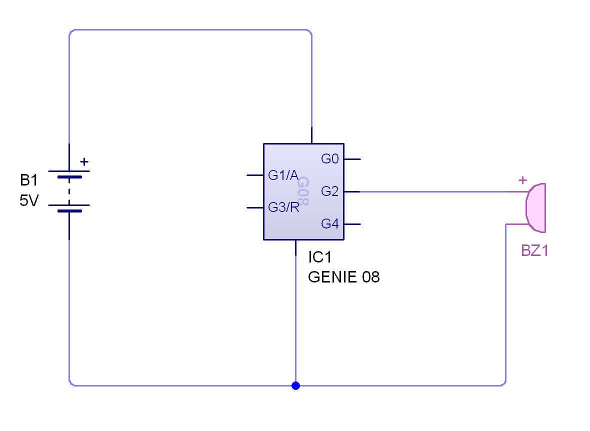
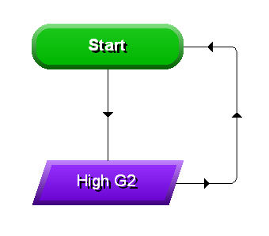
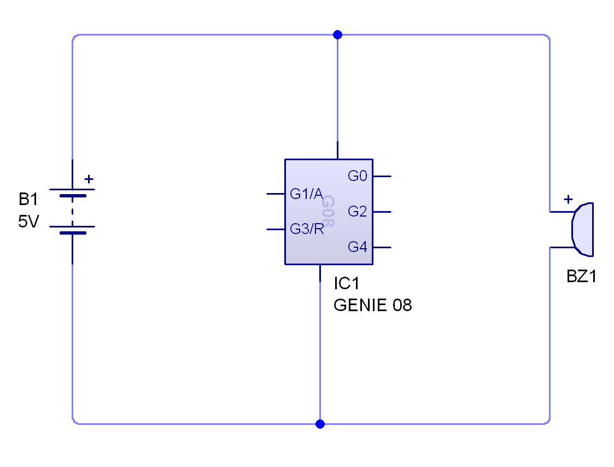
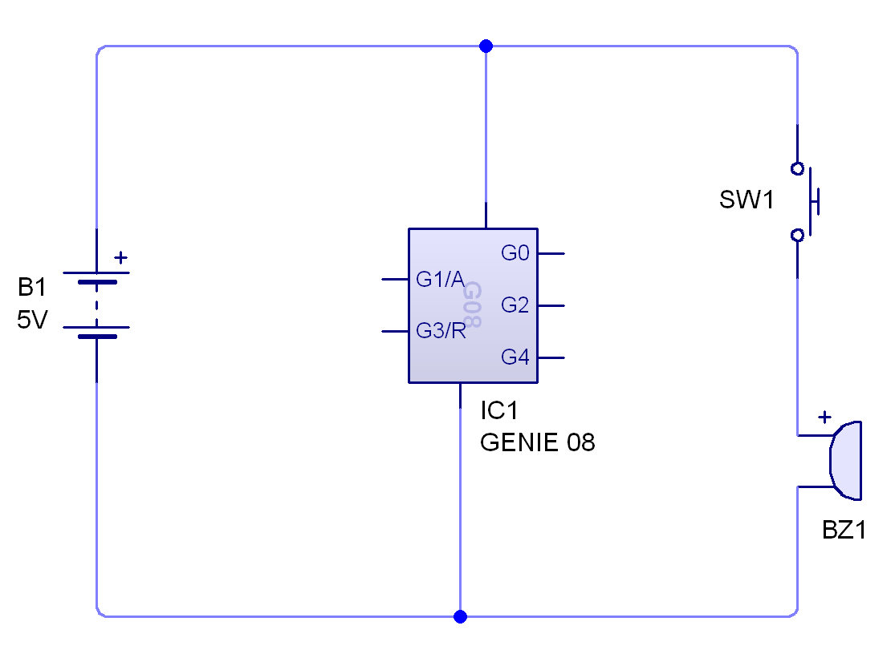

The Drawer Alarm
1 Setting up the buzzer
Learn It
- It would be convenient if we could just hook a buzzer up to the remaining digital output of the circuit.
- Let's try it out.
Test It
- Set up a circuit like the one shown below.

- And use a simple program like the one shown below.

- Now run the program.
- It appears as if the buzzer's not working, but let's just check that it's a problem caused by the GENIE chip and not the buzzer itself.
- Draw this circuit and see what happens.

Badge It - Silver
- Use a digital voltmeter and try and figure out why the buzzer does not work when connected to a GENIE chip's outputs.
- Use screenshots to help explain what is happening.
2 Using a transistor as a digital switch
Learn It
- We need a way to connect the buzzer up to the 5V power rail, but still control whether it is on or off.
- A simple switch would allow us to do this.

- But the switch can only be operated manually, and we need to be able to open and close it using the GENIE chip outputs.
- Luckily there is a component that can perform exactly this function. It's called a transistor.
Try It
- Transistors have three pins
Base,CollectorandEmitter. - When there is a voltage at the base of the transistor, current can pass through the collector and emitter.
- One thing to remember is that transistors can be sensitive to even moderate currents. It's a good idea to put a resistor between the base of the transistor and the output pin of the GENIE chip. A 1kΩ resistor should suffice.
- We'll use a BC547B transistor in the circuit.
Badge It - Gold
- You should now be able to complete your circuit.
- To recap - you should have a switch and an LDR on the inputs of the chip, and two LEDs and the transistor that controls the buzzer connected to the outputs.
- Screenshot your finished circuit when it is completed.